11. Plant Hydraulic Stress¶
Introductory text...

Figure 11.1 Circuit diagram of plant hydraulics scheme
11.1. Plant Water Supply¶
PHS explicitly models water transport through the vegetation according to a simple hydraulic framework following Darcy’s Law for porous media flow equations. The supply equations are used to solve for vegetation water potential forced by a given transpiration and the set of layer-by-layer soil water potentials.
The water supply is discretized into segments: soil-to-root, root-to-stem, and stem-to-leaf. There are typically several (1-49) soil-to-root flows operating in parallel, one per soil layer. There are two stem-to-leaf flows operating in parallel, corresponding to the sunlit and shaded “leaves”.
In general the water fluxes (e.g. soil-to-root, root-to-stem, etc) are calculated as:
(1)¶
 is the flux of water (mmH2O) spanning the segment between
is the flux of water (mmH2O) spanning the segment between  and
and 
 is the hydraulic conductance (s-1)
is the hydraulic conductance (s-1)
 is the area basis (m2/m2) relating the conducting area basis to ground area
is the area basis (m2/m2) relating the conducting area basis to ground area
 is the gradient in water potential (mmH2O) across the segment
is the gradient in water potential (mmH2O) across the segment
(2)¶
 is the maximum segment conductance (s-1)
is the maximum segment conductance (s-1)
 is the water potential at 50% loss of conductivity (mmH2O)
is the water potential at 50% loss of conductivity (mmH2O)
is the water potential of the lower segment terminus (mmH2O)
The area basis and conductance parameterization varies by segment. There are two stem-to-leaf fluxes in parallel, from stem to sunlit leaf and from stem to shaded leaf ( and ).
The water flux from stem-to-leaf is the product of the segment conductance, the conducting area basis, and the water potential gradient from stem to leaf. Stem-to-leaf conductance is defined as the maximum conductance multiplied by the percent of maximum conductance, as calculated by the sigmoidal vulnerability curve.
The maximum conductance is a PFT parameter representing the maximum conductance of water from stem to leaf per unit leaf area.
This parameter can be defined separately for sunlit and shaded segments and should already include the appropriate length scaling (in other words this is a conductance, not conductivity). The water potential gradient is the difference between leaf water potential and stem water potential. There is no gravity term, assuming a negligible difference in height across the segment. The area basis is the leaf area index (either sunlit or shaded).
and ).
The water flux from stem-to-leaf is the product of the segment conductance, the conducting area basis, and the water potential gradient from stem to leaf. Stem-to-leaf conductance is defined as the maximum conductance multiplied by the percent of maximum conductance, as calculated by the sigmoidal vulnerability curve.
The maximum conductance is a PFT parameter representing the maximum conductance of water from stem to leaf per unit leaf area.
This parameter can be defined separately for sunlit and shaded segments and should already include the appropriate length scaling (in other words this is a conductance, not conductivity). The water potential gradient is the difference between leaf water potential and stem water potential. There is no gravity term, assuming a negligible difference in height across the segment. The area basis is the leaf area index (either sunlit or shaded).
(3)¶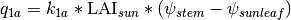
(4)¶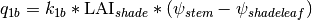
(5)¶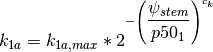
(6)¶
Variables:
= flux of water (mmH2O/s) from stem to sunlit leaf
 = flux of water (mmH2O/s) from stem to shaded leaf
= flux of water (mmH2O/s) from stem to shaded leaf
 = sunlit leaf area index (m2/m2)
= sunlit leaf area index (m2/m2)
 = shaded leaf area index (m2/m2)
= shaded leaf area index (m2/m2)
 = stem water potential (mmH2O)
= stem water potential (mmH2O)
 = sunlit leaf water potential (mmH2O)
= sunlit leaf water potential (mmH2O)
 = shaded leaf water potential (mmH2O)
= shaded leaf water potential (mmH2O)
Parameters:
 = maximum leaf conductance (s-1)
= maximum leaf conductance (s-1)
 = maximum leaf conductance (s-1)
= maximum leaf conductance (s-1)
 = water potential at 50% loss of conductance (mmH2O)
= water potential at 50% loss of conductance (mmH2O)
 = vulnerability curve shape-fitting parameter (-)
= vulnerability curve shape-fitting parameter (-)
There is one root-to-stem flux. This represents a flux from the root collar to the upper branch reaches. The water flux from root-to-stem is the product of the segment conductance, the conducting area basis, and the water potential gradient from root to stem. Root-to-stem conductance is defined as the maximum conductance multiplied by the percent of maximum conductance, as calculated by the sigmoidal vulnerability curve (two parameters). The maximum conductance is defined as the maximum root-to-stem conductivity per unit stem area (PFT parameter) divided by the length of the conducting path, which is taken to be the vegetation height. The area basis is the stem area index. The gradient in water potential is the difference between the root water potential and the stem water potential less the difference in gravitational potential.
(7)¶
(8)¶
Variables:
 = flux of water (mmH2O/s) from root to stem
= flux of water (mmH2O/s) from root to stem
 = stem area index (m2/m2)
= stem area index (m2/m2)
 = gravitational potential (mmH2O)
= gravitational potential (mmH2O)
 = root water potential (mmH2O)
= root water potential (mmH2O)
= stem water potential (mmH2O)
Parameters:
 = maximum stem conductivity (m/s)
= maximum stem conductivity (m/s)
 = water potential at 50% loss of conductivity (mmH2O)
= water potential at 50% loss of conductivity (mmH2O)
 = vegetation height (m)
= vegetation height (m)
There are several soil-to-root fluxes operating in parallel (one for each root-containing soil layer). Each represents a flux from the given soil layer to the root collar. The water flux from soil-to-root is the product of the segment conductance, the conducting area basis, and the water potential gradient from soil to root. The area basis is a proxy for root area index, defined as the summed leaf and stem area index multiplied by the root-to-shoot ratio (PFT parameter) multiplied by the layer root fraction. The root fraction comes from an empirical root profile (see section zqz).
The gradient in water potential is the difference between the soil water potential and the root water potential less the difference in gravitational potential. There is only one root water potential to which all soil layers are connected in parallel. A soil-to-root flux can be either positive (vegetation water uptake) or negative (water deposition), depending on the relative values of the root and soil water potentials. This allows for the occurrence of hydraulic redistribution where water moves through vegetation tissue from one soil layer to another.
Soil-to-root conductance is the result of two resistances in series, first across the soil-root interface and then through the root tissue. The root tissue conductance is defined as the maximum conductance multiplied by the percent of maximum conductance, as calculated by the sigmoidal vulnerability curve. The maximum conductance is defined as the maximum root-tissue conductivity (PFT parameter) divided by the length of the conducting path, which is taken to be the soil layer depth plus lateral root length.
The soil-root interface conductance is defined as the soil conductivity divided by the conducting length from soil to root. The soil conductivity varies by soil layer and is calculated based on soil potential and soil properties, via the Brooks-Corey theory. The conducting length is computed by calculating the characteristic root spacing following Bonan-2014. The root spacing depends on total root biomass and PFT parameters defining root structure (see section zqz).
(9)¶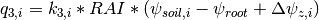
(10)¶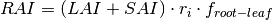
(11)¶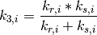
(12)¶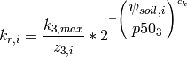
(13)¶
(14)¶
(15)¶
Variables:
 = flux of water (mmH2O/s) from soil layer
= flux of water (mmH2O/s) from soil layer  to root
to root
 = change in gravitational potential from soil layer to surface (mmH2O)
= change in gravitational potential from soil layer to surface (mmH2O)
 = total leaf area index (m2/m2)
= total leaf area index (m2/m2)
= stem area index (m2/m2)
 = water potential in soil layer (mmH2O)
= water potential in soil layer (mmH2O)
= root water potential (mmH2O)
 = length of root tissue conducting path = soil layer depth + root lateral length (m)
= length of root tissue conducting path = soil layer depth + root lateral length (m)
 = root fraction in soil layer (-)
= root fraction in soil layer (-)
 = Brooks-Corey soil conductivity in soil layer (m/s)
= Brooks-Corey soil conductivity in soil layer (m/s)
Parameters:
 = root-to-shoot ratio (-)
= root-to-shoot ratio (-)
 = water potential at 50% loss of root tissue conductance (mmH2O)
= water potential at 50% loss of root tissue conductance (mmH2O)
 = shape-fitting parameter for vulnerability curve (-)
= shape-fitting parameter for vulnerability curve (-)
11.2. Plant Water Demand¶
(16)¶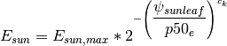
(17)¶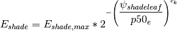
(18)¶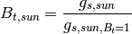
(19)¶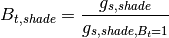
 = sunlit leaf transpiration (mm/s)
= sunlit leaf transpiration (mm/s)
 = shaded leaf transpiration (mm/s)
= shaded leaf transpiration (mm/s)
 = sunlit leaf transpiration absent water stress (mm/s)
= sunlit leaf transpiration absent water stress (mm/s)
 = shaded leaf transpiration absent water stress (mm/s)
= shaded leaf transpiration absent water stress (mm/s)
= sunlit leaf water potential (mmH2O)
= shaded leaf water potential (mmH2O)
 = stomatal conductance of water corresponding to
= stomatal conductance of water corresponding to
 = stomatal conductance of water corresponding to
= stomatal conductance of water corresponding to
 = stomatal conductance of water corresponding to
= stomatal conductance of water corresponding to
 = stomatal conductance of water corresponding to
= stomatal conductance of water corresponding to
11.3. Vegetation Water Potential¶
PHS explicitly models root, stem, shaded leaf, and sunlit leaf water potential at each timestep. PHS iterates to find the vegetation water potential vector  that satisfies continuity in the non-linear vegetation water supply and demand equations.
that satisfies continuity in the non-linear vegetation water supply and demand equations.
(20)¶![\psi=\left[\psi_{sunleaf},\psi_{shadeleaf},\psi_{stem},\psi_{root}\right]](../../_images/math/2943b30f9fe18143a87dc283f22005fbc2cd6cf9.png)
(21)¶
The demand terms (left-hand side) are decreasing functions of absolute leaf water potential. As absolute leaf water potential becomes larger, water stress increases, causing a decrease in transpiration demand. The supply terms (right-hand side) are increasing functions of absolute leaf water potential. As absolute leaf water potential becomes larger, the gradients in water potential increase, causing an increase in vegetation water supply. PHS takes a Newton’s method approach to iteratively solve for the vegetation water potentials that satisfy (21).
(22)¶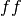